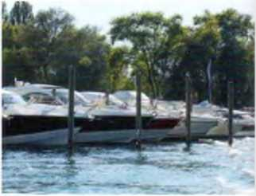
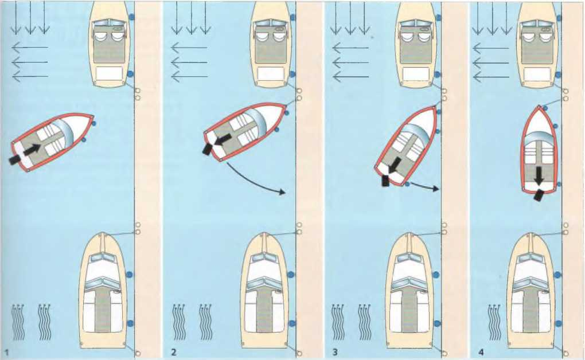
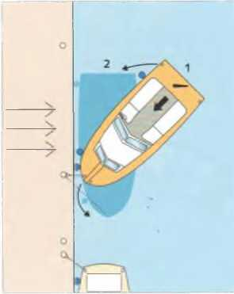
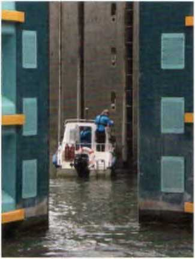

Отход от причала совершенно прост, если нет ветра и течения и спереди и сзади достаточно места для маневрирования. Сначала дать двигателю немного прогреться, затем отдать швартовы, включить передачу и вывести лодку от причала или из стояночного бокса вперёд или назад в зависимости от ситуации. Однако такие идеальные условия встречаются редко. Чем выше надстройки, тем сильнее воздействие ветра на лодку и тем сложнее манёвр отхода. Похожие трудности создаёт и течение.
Показанные здесь манёвры выполняются с поворотными винтами (подвесной двигатель или Z‑привод). У таких приводов влияние бокового эффекта винта в значительной степени компенсируется трим‑пластиной, поэтому направление вращения винта играет меньшую роль. При какой частоте оборотов двигатель лучше всего выполняет манёвры, необходимо определить заранее на практике. Поворотные приводы требуют определённой чувствительности управления.

Отход от причала — ветер под углом к причалу с носа
При отжимном ветре (с берега) манёвр значительно проще. Нос или корма — в зависимости от направления ветра — отталкиваются от причала багром или ногами. Отталкиваться руками опасно, так как центр тяжести оказывается за бортом. Когда нос или корма отклонятся от причала примерно на 15–20°, выровнять привод и на малом ходу вперёд или назад увести лодку от причала.
Если резко повернуть привод, нос или корма могут удариться о причал.

Отход от причала — ветер под углом к причалу с кормы
Лодки с неподвижным гребным валом и рулем реагируют несколько иначе, но могут эффективно использовать эффект «движения винта» для своих маневров. У них есть четкая «хорошая сторона». Это левая сторона для правосторонних винтов.

Выход из марины — ветер или течение сбоку
Противодействуйте ветру или течению, воздействующему на корму. Двигайтесь медленно. Держите носовой швартов натянутым и ослабляйте его только настолько, насколько это необходимо для продвижения лодки вперед. Не допускайте сдвига носа на подветренную сторону.
Причалы для лодок встречаются редко. Понятно, что все операторы портов стремятся разместить как можно больше лодок. Это все чаще приводит к установке так называемых доковых боксов, каждый из которых имеет две сваи для швартовки носа и кормы. Часто канал между рядами свай довольно узкий, оставляя мало места для маневрирования. Поэтому вход и выход из бокса для менее опытного водителя может быть временами довольно нервирующим. Это особенно актуально для лодок с жестким гребным валом, где необходимо учитывать эффект «провисания» винта, а также при боковом ветре. Боковой ветер имеет неприятную тенденцию прижимать лодку к сваям и вызывать ее крен. В этом случае безопасный маневр можно выполнить только с помощью швартовных тросов.

При отходе от буя лодку с выключенной передачей — носовой конец на скользящем креплении — отпускают настолько назад, чтобы убедиться, что она свободна от крепления буя. Только после этого отдать конец, включить передачу и выйти на курс.

Этот манёвр необходимо уметь выполнять на лодке с жёстким валом. Его всегда начинают в сторону вращения винта. Например, при правом вращении — вправо, потому что при движении назад винт создаёт наибольший боковой эффект. Именно он позволяет развернуть лодку на пространстве меньшем, чем её обычный радиус циркуляции.
Манёвр демонстрирует два основных принципа, которые нужно учитывать при всех остальных манёврах:
В целом действует правило: при движении назад руль работает лучше при небольшом угле перекладки.
Яхты с двумя двигателями разворачиваются на месте, включая один двигатель вперёд, а другой назад. Руль остаётся в среднем положении. Изменяя обороты двигателей, лодку можно вращать почти на месте. Двигатель, работающий назад, создаёт более сильный вращающий момент.

Швартовка против течения и ветра
У моторных лодок нет тормозов. Скорость можно погасить только кратким включением заднего хода. По возможности всегда следует швартоваться против течения или ветра. Если ветер и течение направлены в разные стороны, следует швартоваться против того фактора, который сильнее влияет на лодку.
Течение или ветер спереди естественно замедляют лодку, тогда как ветер или течение сзади создают нежелательное ускорение. Сильный боковой ветер может сделать невозможным подход лагом к причалу.
Иногда боковой эффект винта может помочь при швартовке. При правом вращении винта «удобной стороной» является левый борт: при включении заднего хода корма автоматически подтягивается к причалу. У Z‑приводов этот эффект выражен слабее.

Швартовка вдоль причала невозможна: либо ветер дует против течения параллельно причалу, либо дует сильный ветер со стороны причала.

Швартовка против ветра (течения) с жестким гребным валом и рулем
По возможности, швартуйтесь «хорошей стороной» вперед, т.е. с правосторонним гребным винтом на левом борту.

Швартовка против ветра (течения) с неблагоприятной стороны
Вход в слип (место перпендикулярной швартовки носом) при боковом течении (и ветре) с использованием Z-образного привода
Следите, чтобы не пройти над буйрепом (крепление буя) и не намотать его на винт. Поэтому к бую всегда подходят с подветренной стороны.
► На стоячей воде подходят к бую против ветра, поскольку буй лежит по ветру.
► На течении подходят против течения, так как именно оно определяет положение буя, если только течение не очень слабое и ветер не намного сильнее.
Перед тем как оставить судно после швартовки на длительное время, необходимо закрыть все забортные клапаны и выключить главный выключатель бортовой сети.

Если кто‑то падает за борт при движении под мотором, необходимо немедленно выполнить два действия: резко переложить руль в сторону, с которой человек упал за борт, и выключить передачу винта (нейтраль!). Корма отводится в сторону, и риск травмирования винтом уменьшается. Когда корма освободится, судно начинает описывать дугу, которая в зависимости от типа лодки или судна определяется его движителем. При жестком валу всегда следует учитывать эффект руля и возникающий из‑за него меньший радиус циркуляции. К человеку обычно подходят против ветра с минимально возможной скоростью. Один из членов экипажа постоянно наблюдает за человеком и громко и четко указывает рулевому направление на него.
Во время подъема человека на борт винт должен быть выключен. Можно также выключить зажигание, если человек или буй принимается на борт со стороны, где находится рычаг управления. Это предотвращает неконтролируемое начало движения лодки.

1 Человек за бортом с левого борта, руль резко влево, передача нейтраль. Корма уходит...

2 Дуга через левый борт, наблюдать за буем

3 Подход к бую против ветра, указывать направление...

4 ...и принять на борт.
На реках и других водоемах с течением поведение судна в значительной степени зависит от течения. Попутное течение увеличивает скорость лодки относительно берега. Встречное течение соответственно уменьшает ее. Чем медленнее движется лодка, тем заметнее влияние течения. Его необходимо учитывать при всех маневрах остановки и швартовки.
Полезный прием для планирования маневров: представьте, что неподвижная точка на берегу — это транспортное средство, которое приближается или удаляется со скоростью течения. Если согласовать с этим свою скорость, почти не случится, что вы пройдете цель с слишком большой скоростью или что она «уплывет» от вас.
Попутное или встречное течение само по себе не уводит судно с курса. Это происходит только тогда, когда направление течения и курс образуют угол. При боковом течении снос (боковой дрейф) наибольший. Он также зависит от силы (скорости) течения. Если при сильном боковом течении направить нос точно на цель, фактически получится дугообразный курс, так называемая «собачья кривая». Поэтому рекомендуется держать нос немного против течения, то есть идти с упреждением — направлять нос на точку выше по течению относительно цели. Чем сильнее течение, тем больше должен быть угол упреждения. Однако это не всегда разумно. Иногда практичнее позволить течению сносить судно к подветренной стороне в середине реки и затем с небольшой мощностью двигателя вернуться вверх по течению в спокойной воде у берега. Особенно при слабом моторе рекомендуется этот метод.

Пересечение течения
При пересечении реки прямой курс приводит к так называемой «собачьей кривой» (1). Чтобы избежать этого, необходимо, в зависимости от силы течения, держать нос более или менее вверх по течению (2). Это требует мощности двигателя. Если же позволить течению сносить лодку и затем медленно вернуться вверх по течению в более спокойной воде у берега, движение будет значительно экономичнее, несмотря на небольшой крюк (3).

Вход в гавань с течением
То же самое относится и к прохождению между опорами мостов при поперечном течении.
Силу течения можно определить по наклону плавающих знаков фарватера, буев и по водоворотам, образующимся за ними. Однако точно определить скорость течения по этим признакам можно только с опытом.
► В глубокой воде, ближе к середине реки, течение обычно самое сильное. Поэтому при слабом моторе при движении вниз по течению лучше держаться глубокой воды, а при движении вверх по течению использовать более мелкие прибрежные зоны со слабым течением.
Внимание: в изгибах реки основное быстрое течение проходит по внешней стороне изгиба непосредственно у берега. В этом случае говорят о «прижимном течении».
Большинство речных гаваней имеют защитную стенку, проходящую параллельно берегу. Вход в гавань обычно обращен вниз по течению. При входе лучше держаться ближе к окончанию мола, поскольку у берега часто лежит обширная отмель.
Перед выходом необходимо следить за входящими судами, которые могут внезапно появиться из‑за поворота.
В некоторых гаванях для маломерных судов при входе и выходе также предписаны звуковые сигналы.

На реках и каналах судоводитель маломерного судна часто встречает крупные суда, толкаемые составы или буксирные караваны либо должен их обгонять. В обоих случаях приходится пересекать их иногда довольно значительные носовые и кормовые волны, а также более мелкие волны между ними. Особенно опасно оказаться между двумя встречными или обгоняющимися крупными судами. Между ними возникает не только сильная перекрестная волна, но и мощное всасывающее течение. Небольшую слабомоторную лодку может развернуть поперек или притянуть к борту большого судна.
Разумеется, все встречи и обгоны следует выполнять на достаточном расстоянии, чтобы избежать зоны всасывания, которая особенно сильна в передней трети большого судна и в его кормовой струе.
► Важное правило: обгонять только тогда, когда виден прямой участок реки длиной около 1 км и более, никогда в поворотах.
Водоизмещающее судно обычно идет медленнее крупного и чаще оказывается обгоняемым. Нужно сместиться в сторону как можно дальше от его курса, чтобы выйти из самой сильной волны, и просто дать лодке спокойно качаться. Особая техника не требуется.
Иначе обстоит дело с глиссирующими лодками. Волны следует пересекать под углом немного меньше 90°. Чем острее угол пересечения, тем выше опасность разворота поперек волны. Это одинаково относится как к носовой, так и к кормовой волне. Между ними обычно находится система более мелких волн, которые можно пересекать под более острым углом, чтобы при встрече не подойти слишком близко к большому судну и его зоне всасывания.
Неправильно: никогда не входить в носовую или кормовую волну на полном газу или на максимальной скорости. Их высота и сила часто недооцениваются. Сильные удары, которые неожиданно испытывают лодка и пассажиры, могут привести к поломкам, травмам или даже к падению за борт.
Неправильно также резко переходить перед волной из режима глиссирования в водоизмещающий режим. При этом существует опасность, что нос зарывается и в лодку попадет большое количество воды.
Правильно: подходить к волне на умеренной скорости глиссирования, на гребне волны немного сбрасывать газ, чтобы лодка не перелетела через волну, и на обратном склоне снова добавлять газ. Можно также пройти все на медленном водоизмещающем ходу — тогда работать газом не требуется. Однако при обгоне медленный режим может оказаться недостаточным для прохождения волны.

Пересечение носовых и кормовых волн глиссирующей лодкой
При встрече держать достаточное расстояние, чтобы пересекать носовую волну примерно под прямым углом. В более спокойной зоне между носовой и кормовой волной снова выйти на параллельный курс, чтобы при пересечении кормовой волны не попасть в зону всасывания винтовой струи.
При обгоне держаться подальше от всасывания винтовой струи и пересекать кормовую волну примерно под прямым углом. Далее держаться дальше от судна, чтобы не попасть в зону всасывания у носовой части.
Если на борту есть радиосвязь, нужно переключиться на соответствующий канал и сообщить о подходе. Небольшие шлюзы для маломерных судов часто имеют самообслуживание. В этом случае необходимо точно следовать инструкции по эксплуатации. В Нидерландах управление необслуживаемыми шлюзами иногда осуществляется вручную. Тем, кто не собирается шлюзоваться, нельзя швартоваться в зоне шлюза. Указания персонала шлюза, часто передаваемые по громкоговорителю, должны выполняться немедленно.
Основные правила маневрирования в районе шлюза:
Перед входом нужно выставить достаточное количество кранцев и подготовить швартовы на носу и корме. Не входить слишком близко за крупным судном, иначе можно попасть в струю его винта, из которой трудно выйти.
В быстро входящей воде лодка может сильно раскачиваться. Поэтому следует закрепить носовой и кормовой швартовы на стенке шлюза или передать носовой конец впереди стоящему судну. Во время шлюзования швартовы нужно обслуживать так, чтобы избежать ударов о стенки шлюза, ворота или другие суда.
► Никогда не закреплять швартов наглухо на утке или кнехте шлюза, а всегда держать его на скользящем креплении, чтобы можно было в любой момент ослабить или перенести конец и чтобы лодка не зависла, когда уровень воды падает.
При стоянке лагом к большому судну проблем со швартовами обычно нет, однако существует опасность быть зажатым между его бортом и стенкой шлюза.

Шлюзование с достаточным расстоянием до порога
При шлюзовании вниз нужно следить, чтобы последнее малое судно не село кормой на порог шлюза при опускании воды. Насколько он выступает в камеру, показывают белые или желтые отметки на стенках шлюза. В шлюзах со шпунтовыми стенками также следует следить за кранцами — они могут застрять в углублениях.

Выход из шлюза в спокойной струе воды
При выходе швартовы следует держать закрепленными до тех пор, пока винтовая струя предыдущего судна немного не успокоится. Турбулентность может быть настолько сильной, что даже работая двигателем, лодку может отбросить обратно к стенке шлюза.

Указатели направления на подходах к шлюзу

Вход и выход из шлюзовой камеры регулируются светофорами днем и ночью. Они расположены с одной или обеих сторон шлюзовой камеры. Если шлюзовых камер несколько, два мигающих белых огня указывают на используемую камеру. В случае сомнений, приоритет имеют указания персонала шлюза.
Если имеются специальные шлюзы для прогулочных судов, главный шлюз может использоваться только по указанию персонала шлюза. Прогулочные суда длиной менее 20 метров не имеют права на индивидуальный проход через общие шлюзы. Они могут проходить через шлюз только группой или вместе с другими судами. Они могут войти в камеру только после того, как пройдут более крупные суда, на безопасном расстоянии. Если на стенах шлюза обозначены границы, их нельзя пересекать.

В шлюзе: Своевременно уберите кранцы и швартовочные тросы. Закрепите нос и корму. Правильно закрепите кранцы на швартовных лодках, пришвартованных бок о бок. Быстрое течение может создавать довольно сильную турбулентность.
Немецкая ассоциация моторных яхт ежегодно выплачивает федеральному министерству финансов единовременную сумму для покрытия платы за шлюзы для владельцев моторных лодок. Однако это относится только к федеральным водным путям. Плата за шлюзы на землях должна вноситься отдельно.
Якорь служит для надежного удержания судна на грунте или у берега. Он может буквально спасти жизнь, если, например, при отказе двигателя судно дрейфует к опасному препятствию или в узкий оживленный фарватер.
Существует две основные концепции якорей:
якоря веса, эффективность которых основана главным образом на их собственном большом весе, и патентные или легкие якоря, которые при одинаковом весе обладают значительно большей удерживающей силой. Иначе говоря, при одинаковой удерживающей силе они могут быть значительно легче. Однако при заглублении в грунт их малый вес иногда является недостатком.

Адмиралтейский (штоковый) якорь относится к якорям веса. Он хорошо держит на каменистом, глинистом и заросшем грунте и считается хорошим универсальным якорем. В песчаном грунте он удерживает нагрузку, в 7–10 раз превышающую его собственный вес.
Недостатки: он относительно тяжел и неудобен. Один лап всегда торчит вверх, и при постановке на якорь или повороте цепь или канат могут за него зацепиться и непреднамеренно вырвать якорь. Модернизированный вариант — якорь «Fisherman» со складывающимися лапами, что облегчает его хранение.
Якорь Данфорта в сложенном виде отлично размещается. Он имеет по крайней мере втрое большую удерживающую силу, чем штоковый якорь. Тяжелые якоря Данфорта иногда даже трудно вырвать из грунта. Недостаток: он плохо держит на сильно заросшем или каменистом дне.
Плуговый якорь (CQR) считается одним из якорей с наибольшей удерживающей силой среди яхтенных якорей. Как и Данфорт, он относится к безштоковым патентным якорям.
Недостаток: плохо держит на заросшем или глинистом грунте.
Складной или зонтичный якорь — небольшой якорь для легких лодок (например, с подвесным мотором). Его лапы складываются вдоль веретена и фиксируются, благодаря чему он занимает мало места.
Недостаток: по крайней мере одна лапа всегда направлена вверх и может запутаться в якорном канате.
Кроме того, на рынке существует множество других типов якорей под различными названиями. Часто это лишь варианты проверенных конструкций. На более крупных моторных яхтах некоторое распространение получил якорь Bruce.
О требуемом весе якоря для конкретного типа судна можно узнать из таблиц у поставщиков яхтенного оборудования. В целом действует правило: с точки зрения удерживающей силы на различных грунтах якорь не может быть слишком тяжелым. Ограничением служат лишь физические возможности экипажа или тяговое усилие якорной лебедки. Удерживающая сила любого якоря многократно увеличивается при наличии цепного предводителя.

Какой длины должна быть якорная линия?
Эти значения — как их требуют на экзамене на судоводительские права — действуют лишь для спокойной воды. В водах с течением и на больших акваториях, где образуются высокие волны, лучше использовать длину примерно 4-, 6- и 10-кратную глубине воды. Якорный буй показывает место, где лежит якорь.
Чем длиннее цепь или канат, тем лучше держит якорь. На легких лодках с подвесным мотором обычно достаточно якорного каната. На более крупных лодках — чтобы сэкономить вес — иногда используют канат, но между якорем и канатом должен быть вставлен цепной предводитель длиной не менее 6 м. Своим весом он тянет веретено якоря вниз, увеличивает сцепление с грунтом и предотвращает резкие рывки лодки в якорный трос, которые могли бы вырвать якорь. Приемлемый компромисс — канат с гибким свинцовым сердечником.
Якорный канат — вопреки широко распространенному мнению — не следует крепить к якорному кольцу беседочным узлом. На гладком синтетическом тросе он держит плохо и снижает разрывную прочность каната примерно на 50 %.
Место для постановки на якорь следует выбирать тщательно. Оно должно по возможности находиться в воде без течения, быть защищённым от ветра — также с учётом возможных изменений направления ветра — и иметь хороший грунт для якоря.
► Место якорной стоянки должно находиться достаточно далеко от других лодок, чтобы все могли описывать полный круг вокруг своего якоря при изменении направления ветра или течения.
► Запрещается становиться на якорь на фарватере, под мостами и линиями электропередачи, на местах разворота, у входов в гавани, на судовом ходу паромов, а также на трассах водных лыж и водных мотоциклов.
Золотое правило: на реках становиться на якорь только в случае необходимости. Швартовка к берегу в любом случае безопаснее.

Если действует только течение или ветер из одного направления, все лодки поворачиваются в одну сторону и не мешают друг другу. Но если, например, течение направлено против ветра, якорные стоянки могут занимать разные положения. Это происходит из‑за различий в надводной и подводной части корпусов. Одна лодка больше поворачивается по ветру, другая — по течению. Лодка, закреплённая носовым и кормовым якорем, не поворачивается, а остаётся почти на месте при изменениях направления ветра или течения.
Когда место выбрано, на носовой палубе подготавливают якорь. Проверяют, закреплена ли цепь или канат действительно в цепном ящике или на кнехте и зафиксирован ли шплинт у штокового якоря. Канат укладывают так, чтобы он мог свободно выходить — либо аккуратно бухтами, либо разложив их рядом на палубе.

Подготовка якоря
Поднести якорь на носовую палубу и пропустить якорную линию через руку, чтобы проверить, нет ли на ней узлов. Не забыть закрепить конец на борту и затем осторожно опустить якорь за борт. Не стоять в петлях каната. При неиспользовании якорь хранится в якорном ящике.

Держит ли якорь?
Чтобы проверить, держит ли якорь, выбирают два ориентирных объекта на берегу, которые находятся на одной линии. Затем наблюдают, изменяется ли эта линия относительно направления лодки. Небольшое смещение ориентиров часто означает лишь лёгкое разворачивание лодки. Если же ориентиры заметно расходятся, значит якорь дрейфует.
К месту якорной стоянки подходят на малом ходу против ветра или течения — в зависимости от того, что сильнее. Машина стоп. Только когда лодка полностью остановится, якорь опускают. Его не бросают, а дают опуститься вертикально на дно. Якорь не должен лететь по дуге за борт. Если якорь бросить слишком легко, он может запутаться в канате и не зацепиться за грунт. Поэтому канат никогда не бросают просто за борт, а выпускают рукой. Когда якорь достигнет дна, медленно дают задний ход, пока не будет выпущена необходимая длина каната.
Затем канат закрепляют, чтобы якорь мог зацепиться. Короткий толчок назад показывает, держит ли якорь. Если он ползёт, следует вытравить больше каната. Если и это не помогает, нужно поднять якорь и повторить манёвр.
Даже якорь, который сначала держал, позже может начать дрейфовать, например из‑за сильной волны или поворота ветра. Признаком этого является рывок или вибрация каната. Однако на сильно заиленном грунте канат может оставаться совершенно неподвижным, как будто якорь держит.
При наличии ориентируются по двум неподвижным береговым объектам и проверяют, сохраняется ли пеленг. На больших яхтах такую проверку следует проводить примерно раз в час.
Манёвр постановки на якорь у большой моторной яхты в принципе такой же, только якорная цепь выпускается с якорной лебёдки с тормозом.
Обычно это довольно просто: лодка медленно идёт к якорю, одновременно выбирая канат рукой, и проходит над ним. Часто якорь выходит сам, либо достаточно лёгкого рывка при прохождении над ним, чтобы вырвать его из грунта. Якорь осторожно поднимают, чтобы он не ударился о борт, промывают и укладывают на палубу.
Иногда якорь выходит трудно, потому что зацепился за препятствие или глубоко зарылся в тяжёлый ил. Тогда канат закрепляют, когда он стоит вертикально, и проходят дальше над якорем с большей силой. Либо обходят якорь по кругу, чтобы изменить угол тяги и освободить его. При этом канат должен постоянно находиться под натяжением.
Тот, кто хочет быть взят на буксир, подаёт конец или заранее приготовленную бухтами буксирную линию. Буксирующее судно подходит как можно ближе, останавливает двигатель и принимает канат. Если канат брошен слишком коротко и падает в воду между лодками, винт включают только после того, как канат будет выбран. Иначе он легко может попасть в винт и сделать судно неуправляемым.
На течении всегда подходить против течения — так легче маневрировать.
Если кормовые кнехты или битенги не расположены по центру, канат лучше провести через разветвление на оба кормовых кнехта, чтобы буксируемая лодка не тянула постоянно в сторону. Такое распределение усилия особенно важно, если буксируется тяжёлое судно или его нужно стянуть с мели или берега. Трогаться следует медленно, чтобы канат постепенно принял нагрузку.

При односторонней нагрузке буксировки необходимо компенсировать рулением
На небольших буксируемых лодках канат крепят за буксирное кольцо на носу. Обычно оно рассчитано на большую нагрузку, чем носовой кнехт. Поскольку с другого судна часто трудно добраться до этого кольца, рекомендуется заранее закрепить там конец. Его можно использовать и как швартовый, и как якорный канат. Если есть два носовых кнехта, канат крепят к обоим через разветвление.
► При буксировке держаться подальше от каната: если он лопнет, удар может быть опасным для жизни.
В свободных водах, где это допускает движение судов, лучше вытравить столько каната, чтобы он провисал в середине. Эта петля смягчает рывки и предотвращает резкие нагрузки.

Передача буксирного каната
Если канат уложен бухтами, берут в бросающую руку примерно половину бухт и бросают их. Оставшуюся часть выпускают вслед другой рукой. Тяговое усилие распределяют через так называемую развилку на оба кормовых кнехта. Показаны два способа сделать временную развилку.

Буксировка борт о борт
Если буксируемое судно меньше, его держат немного позади и слегка развернутым внутрь. Положение регулируют носовым и кормовым концом. Основную нагрузку принимает продольный конец буксира.
Следует двигаться только с такой скоростью, чтобы не превышалась корпусная скорость буксируемой лодки.
Слишком высокая скорость буксировки опасна: возможно вырывание креплений, занос лодки или её подныривание. Поэтому нужно быть осторожным, если профессиональное судно предлагает взять небольшую лодку на буксир: оно работает на скорости, не учитывая корпусную скорость буксируемого судна.
При отдаче буксирного каната в пункте назначения следить, чтобы он не попал в винт. Чужой канат бросают достаточно далеко назад, свой выбирают только при выключенном винте.
Если буксир — моторная яхта с жёстким валом, могут возникнуть проблемы, если канат закреплён на кормовых кнехтах. Точка поворота таких лодок находится примерно в передней трети корпуса. Тяжёлый буксируемый объект может настолько ограничить отклонение кормы, что управление станет почти невозможным. Поэтому в узких водах и шлюзах лучше буксировать лагом.
Буксируемую лодку берут на ту сторону, куда вращается винт — обычно на правую. Так лучше компенсируется эффект винта. Буксир располагается как можно дальше назад, чтобы винт имел достаточно воды.
Лодки должны быть хорошо защищены кранцами, а концы натянуты как можно туже, чтобы они не смещались относительно друг друга. Обычно достаточно носового и кормового концов и носового шпринга. Дополнительный кормовой шпринг полезен при движении назад и при частых остановках. Но и при таком соединении маневренность ухудшается.
Для некоторых моторная лодка — лишь средство для занятия воднолыжным спортом. Однако он подчиняется строгим правилам.


Обозначение трассы для водных лыж длиной 2000 м


Последовательность повторного старта воднолыжника
После падения лыжника делают круг, подобно манёвру «человек за бортом». Буксирный трос тянут за лодкой, пока она не окажется примерно в 3–4 м позади лыжника. Затем осторожно подходят под прямым углом. Трос проводят перед лыжником по воде, чтобы он мог схватить рукоятку. Машина стоп и новый старт.
Буксирующее судно
Желательно, чтобы буксир имел плоскую кильватерную струю, то есть небольшую V‑образность кормовой части днища, но при этом устойчивость в поворотах. Это важно, чтобы резкие движения лыжника не уводили корму с курса.
Для надувных лодок и очень лёгких моторных лодок можно считать минимальной мощность около 25 PS (18 кВт). Для водных лыж — примерно 40 PS (29 кВт). Около 25 км/ч — подходящая скорость для спортивного катания.
Водные мотоциклы
Для них также действует правило движения только по специально обозначенным синими знаками трассам. Только при видимости более 1000 м и в период с 7:00 до 20:00, но не раньше восхода и не позже захода солнца. Водные мотоциклы могут спускаться на воду и подниматься из неё только на оборудованных спусках, рампах или с помощью крана.
Переходы по внутренним водным путям или подход к ближайшей трассе разрешены, если двигаться по прямому курсу с умеренной скоростью.
Подробные правила для водных мотоциклов и воднолыжников содержатся в постановлениях о водных мотоциклах и водных лыжах.

Обозначенная трасса для водных мотоциклов (Jet‑ski, водный скутер)

Аварией называют любое повреждение судна, которое сильно ухудшает его ходовые качества или представляет непосредственную опасность для судна и экипажа. Как и при любом несчастном случае, прежде всего необходимо вывести людей из опасности, а пострадавших спасти и оказать им помощь. Обязанность оказания помощи, разумеется, действует и тогда, когда вы сами не вовлечены в аварию, а лишь являетесь свидетелем. Каждому пострадавшему следует по возможности оказать помощь на месте происшествия до тех пор, пока дальнейшая помощь не станет ненужной. Помощь ограничивается там, где она могла бы поставить под угрозу собственное судно или экипаж.
После столкновения или серьёзной посадки на мель необходимо немедленно установить, поступает ли вода в судно. При сильном поступлении воды следует без промедления взять курс к ближайшему берегу, как можно выше вытащить судно на сушу и закрепить его швартовыми или якорем. После этого с участниками происшествия необходимо обменяться всеми необходимыми данными.
После столкновения с другим судном необходимо немедленно составить аварийный отчёт с указанием имени, порта приписки и типа судна второго участника, времени, места (километр реки), видимости, погоды, а также персональных данных участников и свидетелей.
Посадка на мель на обычно свободном фарватере может произойти, если там затоплен или занесён неизвестный предмет. Даже если судно не получило повреждений, необходимо немедленно уведомить водную полицию или управление водных путей и судоходства и сообщить место препятствия, чтобы его можно было устранить или хотя бы обозначить.